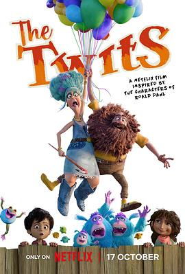

6.0
蠢特夫妇
The Twits
2025
英国
评分 6.0
导演:
菲尔·约翰斯顿 / 托德·德蒙 / 凯蒂·沙纳汉
演员:
约翰尼·维加斯 / 玛格·马丁戴尔 / 艾米莉亚·克拉克 / 娜塔莉·波特曼 / 艾伦·图代克 / 杰森·曼楚克斯 / 麦特里伊·拉玛克里斯南
类型:
冒险,喜剧,奇幻
剧情简介
在一个名为“特威特兰”的荒诞世界里，老少皆知的恶棍夫妻——特威特夫妇——运营着一座奇异、肮脏又危险的游乐园，他们以捉弄、欺压动物与人类为乐。某天，他们的园区因严重违规被关闭，愤怒之下，两人策划了一场大规模报复：用滚烫的热狗肉液体摧毁小镇水塔，引发灾难性的洪流。与此同时，勇敢的12岁女孩比莎和她的朋友巴布西成了事件的牺牲者：巴布西因此被认定为“受污染”，失去被领养机会。两人联手神秘动物家族“马格尔-伍姆普”——被特威特夫妇囚禁已久的猴族——立志揭露真相，解救被压迫者。动作幽默不断、恶作剧接连上演：从监狱逃脱到竞选市长，从游乐园大逆转到动物觉醒反抗，冒险一路高能。影片以鲜明的角色反差和奔放的视觉风格展示：特威特夫妇的荒唐、动物们的觉醒、孩子们的团结，让人既感荒诞也感温情。动画结合奇幻元素与讽刺喜剧，把“权力滥用”“弱者觉醒”注入一个看似恶搞却暗含深意的叙事。瘙痒的笑点、意外的政治暗喻、儿童与动物的联合战斗构成影片核心。当比莎注视着被困的马格尔-伍姆普，耳边回响的不仅是游乐园的音乐，更是一种反抗的节奏——在这场荒诞盛宴里，弱者握紧拳头、动物脱下枷锁、小女孩迈出第一步。